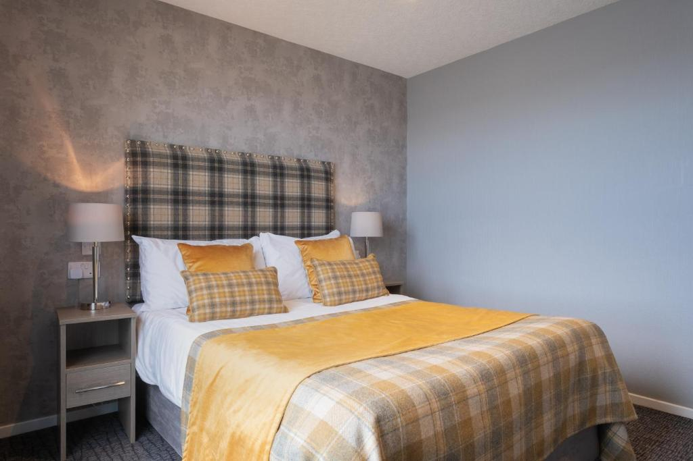

Your Home Away From Home
Welcome to the tranquility of the Dundee Room at Robertson's Bed and Breakfast, a serene space named after the city of Dundee. This double room offers a peaceful retreat, combining classic comfort with modern touches for a delightful stay in Stonehaven.
The Dundee Room welcomes you with a comfortable double bed adorned with soft linens, ensuring a restful night's sleep. The room's decor captures the timeless essence of Dundee, blending classic Scottish elements with contemporary aesthetics, creating an inviting and relaxing atmosphere.
While the Dundee Room does not feature ensuite facilities, a thoughtfully designed and well-appointed private bathroom is just steps away. Enjoy the convenience of privacy and comfort as you indulge in a hot shower or a leisurely bath.
For your convenience, a print option is available, ensuring that details about the Dundee Room are easily accessible during your stay.
Print